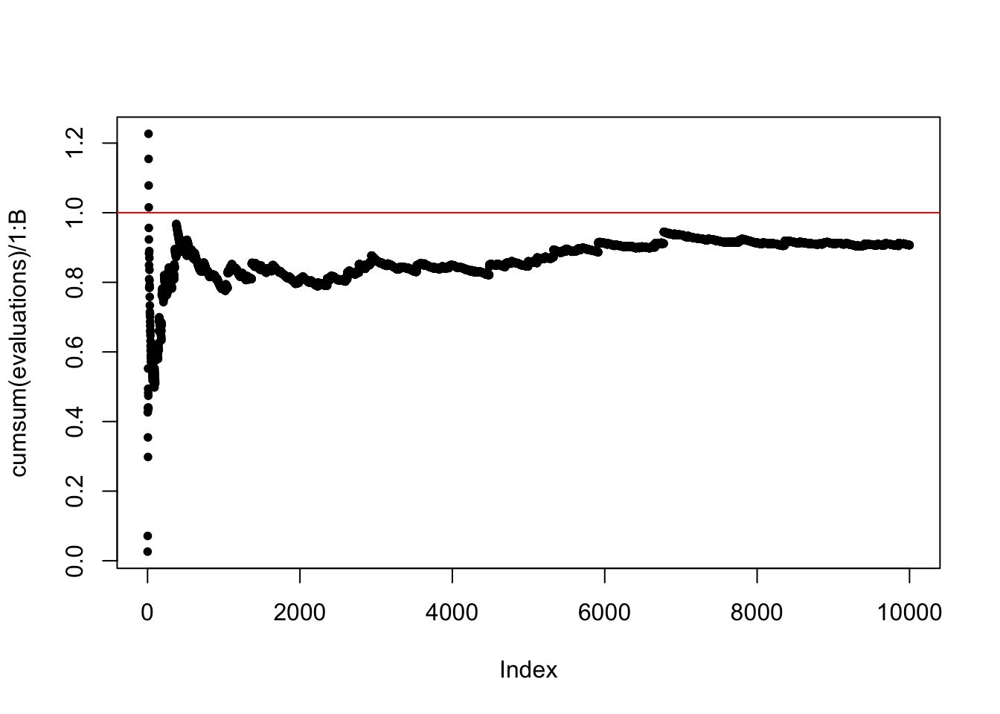
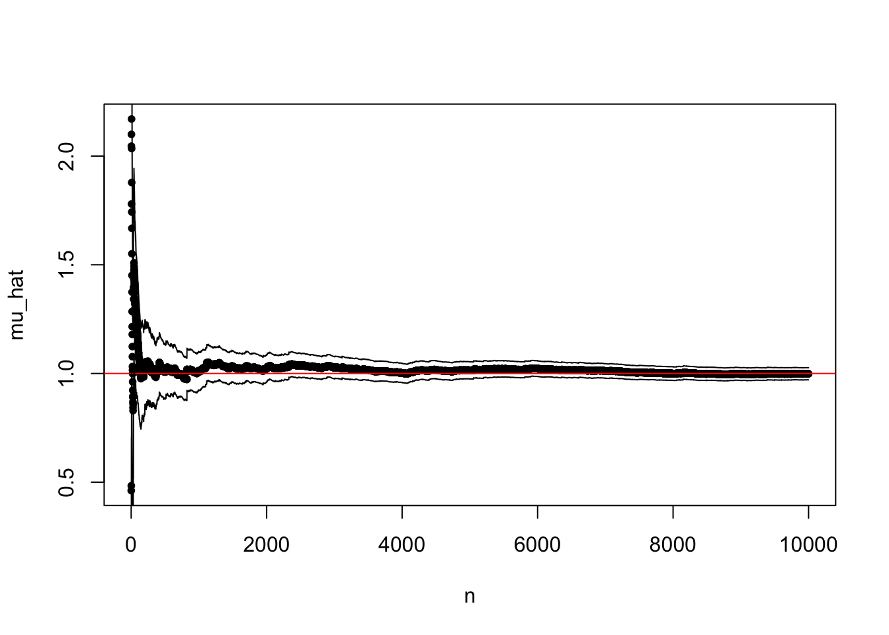
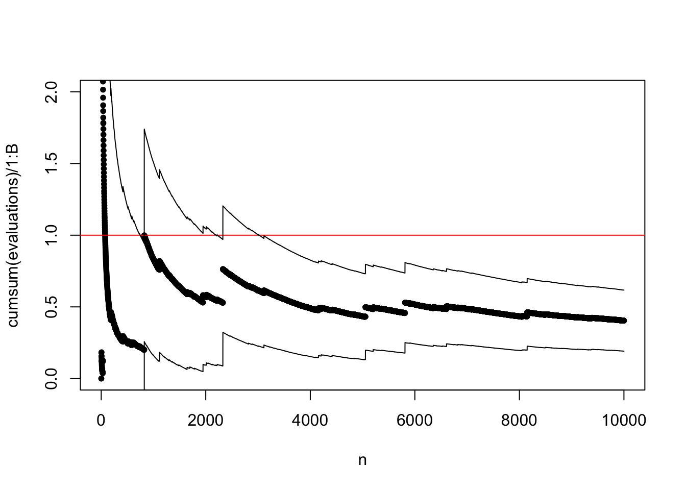

5.2 Importance sampling
When we are only interested in Monte Carlo integration, we do not need to sample from the target distribution.
Observe that \[\begin{align} \mu = \int h(x) f(x) \ \mathrm{d}x & = \int h(x) \frac{f(x)}{g(x)} g(x) \ \mathrm{d}x \\ & = \int h(x) w^*(x) g(x) \ \mathrm{d}x \end{align}\]
whenever \(g\) is a density fulfilling that \[g(x) = 0 \Rightarrow f(x) = 0.\]
With \(X_1, \ldots, X_n\) i.i.d. with density \(g\) define the weights \[w^*(X_i) = f(X_i) / g(X_i).\] The importance sampling estimator is \[\hat{\mu}_{\textrm{IS}}^* := \frac{1}{n} \sum_{i=1}^n h(X_i)w^*(X_i).\] It has mean \(\mu\). Again by the LLN \[\hat{\mu}_{\textrm{IS}}^* \rightarrow E(h(X_1) w^*(X_1)) = \mu.\]
To assess the precision of the importance sampling estimate via the CLT we need the variance of the average as for plain Monte Carlo integration. By the CLT \[\hat{\mu}_{\textrm{IS}}^* \overset{\textrm{approx}} \sim \mathcal{N}(\mu, \sigma^{*2}_{\textrm{IS}} / n)\] where \[\sigma^{*2}_{\textrm{IS}} = V (h(X_1)w^*(X_1)) = \int (h(x) w^*(x) - \mu)^2 g(x) \ \mathrm{d}x.\]
We may have \(\sigma^{*2}_{\textrm{IS}} > \sigma^2_{\textrm{MC}}\) or \(\sigma^{*2}_{\textrm{IS}} < \sigma^2_{\textrm{MC}}\) depending on \(h\) and \(g\). By choosing \(g\) cleverly so that \(h(x) w^*(x)\) becomes as constant as possible, importance sampling can reduce the variance considerably compared to plain MC.
The importance sampling variance can be estimated just as the MC variance \[\hat{\sigma}^{*2}_{\textrm{IS}} = \frac{1}{n - 1} \sum_{i=1}^n (h(X_i)w^*(X_i) - \hat{\mu}_{\textrm{IS}}^*)^2,\] and a 95% standard confidence interval is computed as \[\hat{\mu}^*_{\textrm{IS}} \pm 1.96 \frac{\hat{\sigma}^*_{\textrm{IS}}}{\sqrt{n}}.\]
5.2.1 Unknown normalization constants
If \(f = c^{-1} q\) with \(c\) unknown then \[c = \int q(x) \ \mathrm{d}x = \int \frac{q(x)}{g(x)} g(x) \ d x,\] and \[\mu = \frac{\int h(x) w^*(x) g(x) \ d x}{\int w^*(x) g(x) \ d x},\] where \(w^*(x) = q(x) / g(x).\)
An importance sampling estimate of \(\mu\) is thus \[\hat{\mu}_{\textrm{IS}} = \frac{\sum_{i=1}^n h(X_i) w^*(X_i)}{\sum_{i=1}^n w^*(X_i)} = \sum_{i=1}^n h(X_i) w(X_i),\] where \(w^*(X_i) = q(X_i) / g(X_i)\) and \[w(X_i) = \frac{w^*(X_i)}{\sum_{i=1}^n w^*(X_i)}\] are the standardized weights. This works irrespectively of the value of the normalizing constant \(c\).
The variance of the IS estimator with standardized weights is a little more complicated, because the estimator is a ratio of random variables. From the multivariate CLT \[\frac{1}{n} \sum_{i=1}^n \left(\begin{array}{c} h(X_i) w^*(X_i) \\ w^*(X_i) \end{array}\right) \overset{\textrm{approx}}{\sim} \mathcal{N}\left( c \left(\begin{array}{c} \mu \\ {1} \end{array}\right), \frac{1}{n} \left(\begin{array}{cc} \sigma^{*2}_{\textrm{IS}} & \gamma \\ \gamma & \sigma^2_{w^*} \end{array} \right)\right),\] where \[\begin{align} \sigma^{*2}_{\textrm{IS}} & = V(h(X_1)w^*(X_1)) \\ \gamma & = \mathrm{cov}(h(X_1)w^*(X_1), w^*(X_1)) \\ \sigma_{w^*}^2 & = V (w^*(X_1)). \end{align}\]
We can then apply the \(\Delta\)-method with \(h(x, y) = x / y\). Note that \(Dh(x, y) = (1 / y, - x / y^2)\), whence \[Dh(c\mu, c) \left(\begin{array}{cc} \hat{\sigma}^{*2}_{\textrm{IS}} & \gamma \\ \gamma & \sigma^2_{w^*} \end{array} \right) Dh(c\mu, c)^T = c^{-2} (\sigma^{*2}_{\textrm{IS}} + \mu^2 \sigma_{w^*}^2 - 2 \mu \gamma).\]
By the \(\Delta\)-method \[\hat{\mu}_{\textrm{IS}} \overset{\textrm{approx}}{\sim} \mathcal{N}(\mu, c^{-2} (\sigma^{*2}_{\textrm{IS}} + \mu^2 \sigma_{w^*}^2 - 2 \mu \gamma) / n).\] Note that for \(c \neq 1\) it is necessary to estimate \(c\) as \(\hat{c} = \frac{1}{n} \sum_{i=1}^n w^*(X_i)\) to compute an estimate of the variance.
5.2.2 Computing a high-dimensional integral
To illustrate the usage and limitations of importance sampling, consider the following \(p\)-dimensional integral \[\int e^{-\frac{1}{2}\left(x_1^2 + \sum_{i=2}^p (x_i - \alpha x_{i-1})^2\right)} \mathrm{d} x.\] Now this integral is not even expressed as an expectation w.r.t. any distribution in the first place – it is an integral w.r.t. Lebesgue measure in \(\mathbb{R}^p\). To use importance sampling it is therefore necessary to rewrite the integral as an expectation w.r.t. a probability distribution. There might be many ways to do this, and the following is just one.
Rewrite the exponent as \[||x||_2^2 + \sum_{i = 2}^p \alpha^2 x_{i-1}^2 - 2\alpha x_i x_{i-1}\] so that \[\begin{align*} \int e^{-\frac{1}{2}\left(x_1^2 + \sum_{i=2}^p (x_i - \alpha x_{i-1})^2\right)} \mathrm{d} x & = \int e^{- \frac{1}{2} \sum_{i = 2}^n \alpha^2 x_{i-1}^2 - 2\alpha x_i x_{i-1}} e^{-\frac{||x||_2^2}{2}} \mathrm{d} x \\ & = (2 \pi)^{p/2} \int e^{- \frac{1}{2} \sum_{i = 2}^p \alpha^2 x_{i-1}^2 - 2\alpha x_i x_{i-1}} f(x) \mathrm{d} x \end{align*}\] where \(f\) is the density for the \(\mathcal{N}(0, I_p)\) distribution. Thus if \(X \sim \mathcal{N}(0, I_p)\), \[\int e^{-\frac{1}{2}\left(x_1^2 + \sum_{i=2}^p (x_i - \alpha x_{i-1})^2\right)} \mathrm{d} x = (2 \pi)^{n/2} E\left( e^{- \frac{1}{2} \sum_{i = 2}^p \alpha^2 X_{i-1}^2 - 2\alpha X_i X_{i-1}} \right).\]
The Monte Carlo integration below computes \[\mu = E\left( e^{- \frac{1}{2} \sum_{i = 2}^p \alpha^2 X_{i-1}^2 - 2\alpha X_i X_{i-1}} \right)\] by generating \(p\)-dimensional random variables from \(\mathcal{N}(0, I_p)\). It can actually be shown that \(\mu = 1\), but we skip the proof of that.
We can view this example as an example of plain Monte Carlo integration, but it is also a variation of importance sampling. The initial integral was not an expectation but an integral w.r.t. Lebesgue measure. By changing the integration measure to the Gaussian distribution and reweighting the integrand we represented the integral in terms of an expectation. This is exactly the idea of importance sampling as well.
First, we implement the function we want to integrate.
h <- function(x, alpha = 0.1){
p <- length(x)
tmp <- alpha * x[1:(p - 1)]
exp( - sum((tmp / 2 - x[2:p]) * tmp))
}Then we specify various parameters.
B <- 10000 ## The number of random variables to generate
p <- 100 ## The dimension of each random variableThe actual computation is implemented using the apply function. We
first look at the case with \(\alpha = 0.2\).
We can then plot the cumulative average and compare it to the actual value of the integral that we know is 1.

If we want to control the error with probability 0.95 we can use Chebychev’s inequality and solve for \(\varepsilon\) using the estimated variance.
plot(cumsum(evaluations) / 1:B, pch = 20)
abline(h = 1, col = "red")
me <- cumsum(evaluations) / 1:B
ve <- var(evaluations)
epsilon <- sqrt(ve / ((1:B) * 0.05))
lines(1:B, me + epsilon)
lines(1:B, me - epsilon)
The confidence bands provided by the central limit theorem are typically much more accurate estimates of the actual uncertainty than the upper bounds provided by Chebychev’s inequality.
plot(cumsum(evaluations) / 1:B, pch = 20)
abline(h = 1, col = "red")
lines(1:B, me + 2*sqrt(ve/(1:B)))
lines(1:B, me - 2*sqrt(ve/(1:B)))
To illustrate the limits of Monte Carlo integration we increase \(\alpha\) to \(\alpha = 0.4\).

The sample path above is not carefully selected to be pathological. Due to occasional large values, the typical sample path will show occasional large jumps, and the variance may easily be grossly underestimated.
Figure 5.3: Four sample paths of the cumulative average for \(\alpha = 0.4\).
To be fair, it is the choice of standard multivariate normal distribution as the reference distribution for large \(\alpha\) that is problematic rather than Monte Carlo integration and importance sampling as such. However, in high dimensions it an be quite difficult to choose a suitable distribution to sample from.